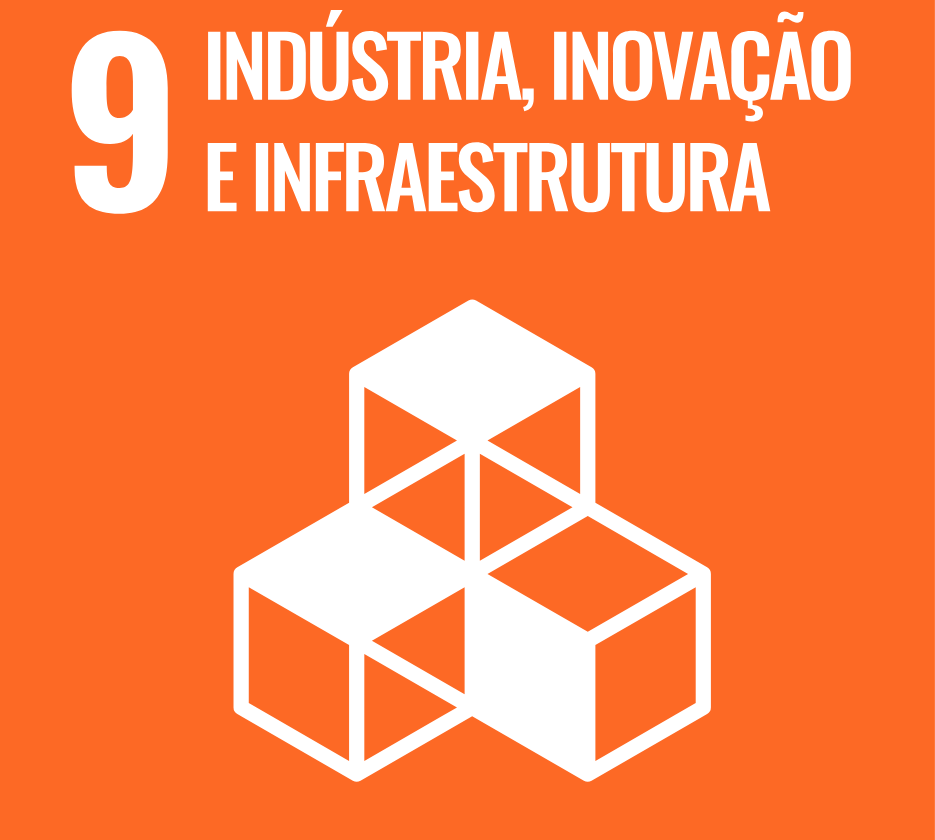
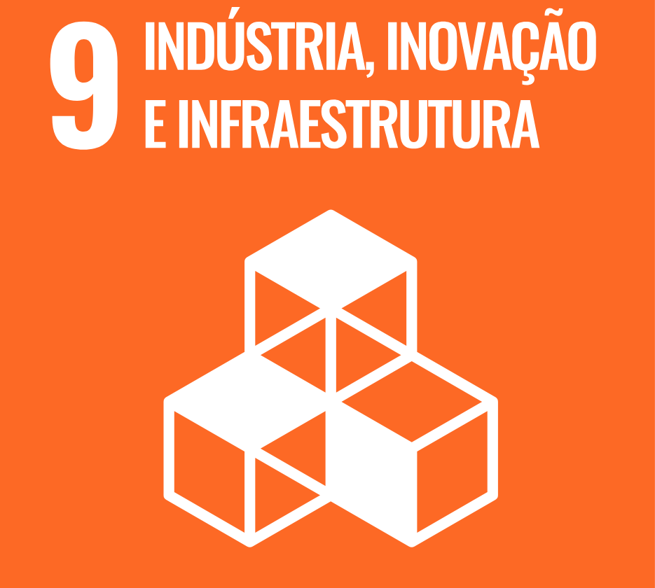

Resumo
Tenho conhecimentos em desenvolvimento web e banco de dados. Habilidades em programação, organização de dados e faturamento.
Estou em busca de expandir meus conhecimentos técnicos, contribuindo com soluções práticas para a empresa enquanto me desenvolvo como profissional.
ODS que pretendo contribuir
 

Habilidades
- Programação
- Desenvolvimento de sistemas
- Banco de Dados
- Faturamento e Sistemas de Gestão
- Metodologias Ágeis
Educação
- Bacharelando em Engenharia de Software - UTFPR-CP (2023-)
- Técnico em Desenvolvimento de Sistemas - Senai Londrina (2022-2023)
Hobbies
- Violonista e Guitarrista amador
- Apreciador da Culinária
- Entusiasta de Jogos Eletrônicos